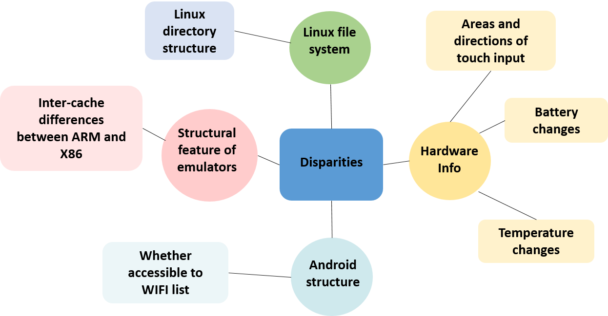
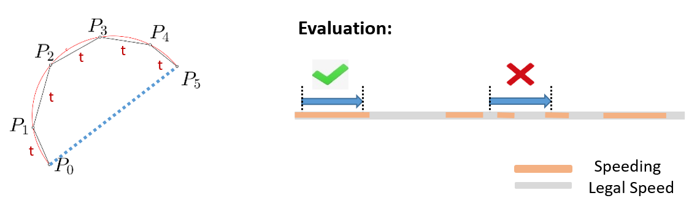
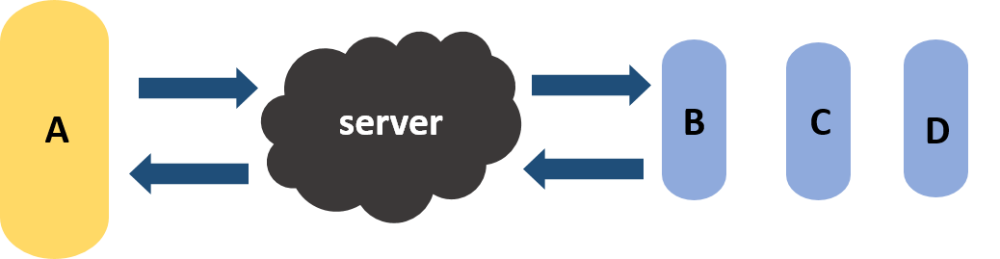
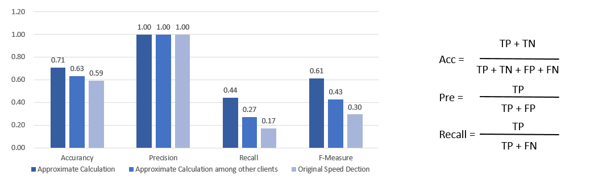

Introduction
In summer 2020, I worked as Game Research and Development Engineer Intern with Netease game , developing an anti-cheating system for Game Disorder
Roles and Skills

How did I accomplish each task?
My Roles
Game Research and Development Engineer Intern
Tools
Python, C++, Messiah
Duration
Junior Year, 8 weeks
Introduction
In summer 2020, I worked as Game Research and Development Engineer Intern with Netease game , developing an anti-cheating system for Game Disorder
Roles and Skills
How did I accomplish each task?
Selected Tasks
Task 1
To detect emulator players before loading the game
Solution
Tell by disparities. Use structure, software, hardware differences between emulators and Android phones to distinguish them.

Judge by vote.If users do not pass through one test, they will get one vote. If the suspected score of the user is high enough in the end, they will be considered to be emulator cheaters.
Result
We have tested this method on six popular emulators and two smart phones The result was our algorithm reach a 100% accuracy rate.
Task 2
To detect speed cheaters during the game
Solutions
Approximate Calculations: I introduced the approximate calculations in calculus, which can detect speed in any moving trails.

Judge through Other Clients: when a player is likely to be a cheater, other clients which are in the same game would examine the speed of that client.

Result
According to the chart, the reliability of the algorithm is weakened by the network transmission, but in general, although missing judgment exists, these methods can reach 100% precision.

Copyright © 2020.ZihuiLin All rights reserved.粤ICP备2020096109号